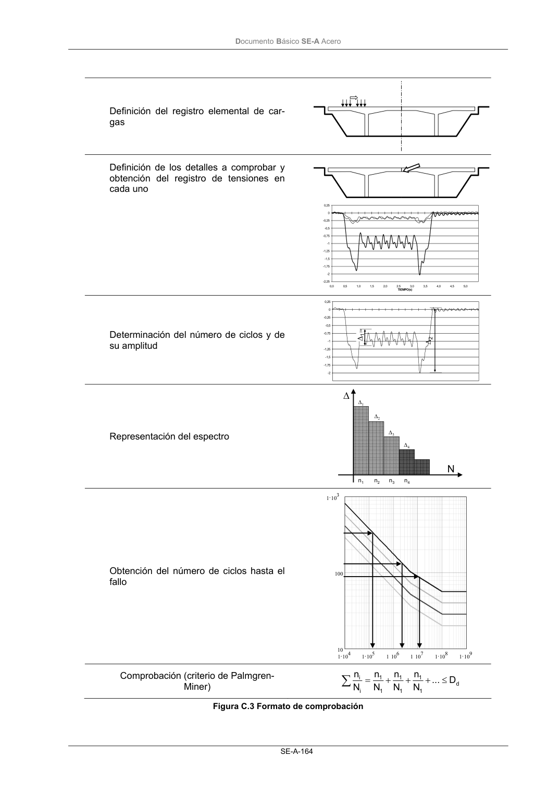

DB-SE-A · C.4 Comprobación · versión 2007-10-23 · capa oficial
Formatos: JSON compacto · Markdown · PDF fuente
Ámbito del documento · texto del ámbito · documento y tablas
ID técnico a0218 · PDF pág. 165-166 · jerarquía no validada por persona · contrastado con el literal de la página 165 (candidato tipográfico); no validado por persona · padre: raíz
C.4 Comprobación 1 Son admisibles los formatos de acumulación de daño o de carrera equivalente. Comprende los si- guientes pasos, cada uno de los cuales se reflejará en el apartado correspondiente de la memoria del proyecto: a) definición del registro elemental de cargas (por ejemplo, cada pasada del carro en un puente grúa) y del número de veces que se repite a lo largo de la vida útil de la estructura. La defini- ción del registro de cargas y del número de repeticiones vendrá dada en cada caso por las especificaciones particulares del sistema; b) definición de los detalles estructurales a comprobar (por ejemplo, los cordones de ala de un empalme soldado en una viga carrilera) y obtención del registro elemental de tensiones (por ejemplo, las tensiones normales en las alas en la sección del citado empalme). El procedi- miento de cálculo de tensiones seguirá lo establecido en los apartados precedentes y tendrá en cuenta, cuando proceda, los posibles efectos de amplificación por el carácter dinámico de las acciones; c) determinación del número de ciclos y de su amplitud (carrera). Son aceptables los métodos de “vaciado de la alberca” o de “flujo de agua”. No es necesario considerar los ciclos cuyas carre- ras sean inferiores al límite de corte. El resultado de esta operación, ponderado por el número de veces que se repite el ciclo de carga a lo largo de la vida útil de la estructura, se representa en forma de espectro; d) dibujo del espectro de amplitudes (carreras); e) obtención, para cada carrera de tensiones, del número de ciclos hasta fallo. Entrando en las curvas S-N correspondientes al detalle analizado con la carrera de tensión de cálculo (multi- plicada por γFf) se obtiene el número de ciclos a fallo NRi; f) obtención del daño acumulado conforme a la regla de Palmgren- Miner. 2 Una vez obtenido el daño total el criterio de comprobación puede formularse en daño (simplemente comprobar que el daño acumulado sea inferior a la unidad) o en la carrera equivalente de tensio- nes. DocumentoBásico SE-A Acero SE-A-164 Definición del registro elemental de car- gas Definición de los detalles a comprobar y obtención del registro de tensiones en cada uno -2,25 -2 -1,75 -1,5 -1,25 -1 -0,75 -0,5 -0,25 0 0,25 0,0 0,5 1,0 1,5 2,0 2,5 3,0 3,5 4,0 4,5 5,0 TIEMPO(s) Determinación del número de ciclos y de su amplitud -2 -1,75 -1,5 -1,25 -1 -0,75 -0,5 -0,25 0 0,25 ∆1 ∆2 Representación del espectro ∆1 n1 ∆2 n2 ∆3 n3 ∆4 n4 N ∆ Obtención del número de ciclos hasta el fallo 1104 1105 1106 1107 1108 1109 10 100 1103 Comprobación (criterio de Palmgren- Miner) d 1 1 1 1 1 1 i i D ... N n N n N n N n ≤ + + + =

PDF fuente redistribuible: copia fiel enlazada en esta página (SHA256 verificado).